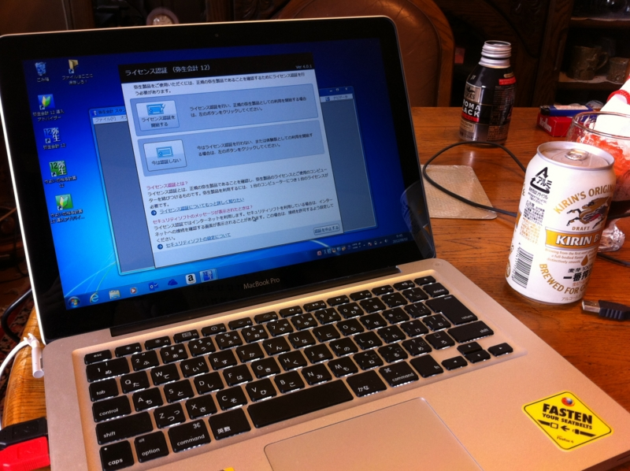

Mac Book Pro をとられた。
執筆日時：

うちの Mac Book Pro が実家に召し上げられてしまった。（ほとんど）タダで。
経緯
修理依頼
「経理やってたパソコンが壊れたんだけど」
「大変やな」
「直して！」
「Σ(ﾟдﾟlll)」
データのバックアップ依頼
「電源が死んでるっぽい？ メーカーに修理出して」
「見積りしてもらったら、修理の前のデータバックアップだけで2万円って言われた」
「しゃあないな、頑張れ」
「お金もったいないからやってよ。できるんでしょ？」
「Σ(ﾟдﾟlll)」
代車ならぬ代パソコンの要求
「とりあえずパソコン使えなくて不便なんですけど」
「じゃぁ、おれの Mac Book Pro*1を使いなよ」
「ありがとう。っていうか、壊れたのあげるからこれちょうだい？」
「Σ(ﾟдﾟlll)」
「だめ？ ビール1本飲んでいいよ」
「Σ(ﾟдﾟlll)」
セットアップ依頼

「このパソコン、エクセルとか弥生会計とかなにも入ってないんだけど」
「そうですね」
「焼肉用意したし、ビール飲みにきなよ（≒こっちにきてセットアップしろ）」
「Σ(ﾟдﾟlll)
…（この際、ぜんぶ SkyDrive にぶち込むようにさせよう）
…（マイクロソフトアカウント*2作らねば）」
「もっと可愛い ID とれなかったの？ Happy とか Love とかつけてよ」
「Σ(ﾟдﾟlll)」
教訓

- ファイルは全部 SkyDrive に。これでわざわざ壊れたPCから HDD 抜いてデータをサルベージしなくてもいい
- 安易に「PC が一台余ってる」だなんて言っちゃいけない
- どうせならお腹をすかせてから帰ればよかった